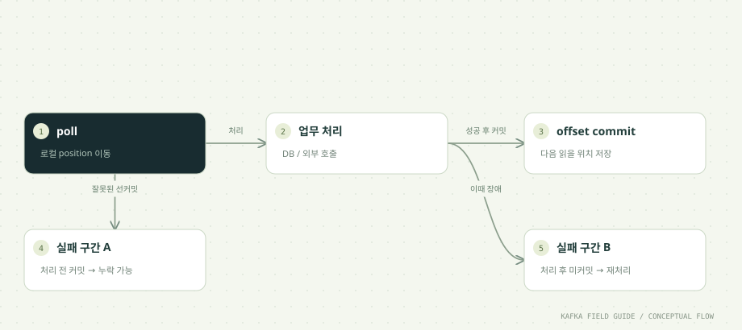

이 단원을 마치면
- position과 committed offset을 구분한다
- 처리 전·후 커밋의 실패 구간을 찾는다
- 부분 처리 배치의 안전한 커밋 위치를 계산한다
01 / UNDERSTAND먼저, 원리를 이해합니다.
읽은 위치와 복구 위치는 다릅니다
poll로 받은 레코드만큼 Consumer의 로컬 position은 진행됩니다. committed offset은 재시작이나 재할당 시 복구할 위치입니다. 레코드를 읽었다고 업무 처리가 끝났거나 복구 위치가 저장된 것은 아닙니다.
처리 후 커밋에는 재처리 구간이 있습니다
업무 처리 성공 → 커밋 전에 프로세스가 종료되면 이전 커밋부터 다시 읽습니다. 유효한 기록이 보관되어 있고 재시도 가능한 조건에서는 at least once 처리를 설계할 수 있지만, 부작용 중복을 막는 멱등 처리가 필요합니다.
처리 전 커밋에는 건너뛰는 구간이 있습니다
커밋 성공 → 업무 처리 전에 종료되면 재시작 시 해당 이벤트를 지나갑니다. 예제의 crash-before는 이 상태를 의도적으로 만듭니다. 이 동작을 재현한 뒤 같은 그룹으로 복구해 보세요.
배치 일부만 처리했으면 일부만 커밋합니다
poll이 offset 0~9를 반환했는데 0만 처리한 뒤 인자 없는 commitSync()를 호출하면 아직 처리하지 않은 위치까지 저장될 수 있습니다. 각 파티션의 처리 완료 구간 다음 위치를 명시합니다. offset 5까지 처리했으면 6을 커밋합니다.
02 / FOLLOW THE EVENT데이터의 이동을 따라갑니다.


원리를 이해하기 위한 단계 모델입니다. 네트워크 시간이나 장애 판정을 재현하지 않습니다.
처리 후 커밋 전에 장애가 나면?
설명용 메모리 모델입니다. 실제 Kafka 동작은 아래 실습에서 확인합니다.
03 / READ THE CODE현업 패턴을 코드로 읽습니다.
아래 코드는 함께 제공된 실행 소스에서 발췌했습니다. 전체 클래스와 설정은 소스 파일에서 확인할 수 있습니다.
TopicPartition partition = new TopicPartition(r.topic(), r.partition());
// Commit the NEXT record to read, never the full unprocessed poll batch.
c.commitSync(Map.of(partition,
new OffsetAndMetadata(r.offset() + 1, r.leaderEpoch(), "processed")));소스: 공통/src/main/java/study/kafka/Settings.java · 64행부터
- 커밋 값은 처리한 offset 자체가 아니라 offset + 1입니다. leader epoch도 함께 전달합니다.
- 한 레코드마다 commitSync를 호출해 실패 구간을 명확히 보여줍니다. 운영에서는 안전한 완료 구간을 추적하면서 배치 커밋해 호출 비용을 줄일 수 있습니다.
- Runtime.halt(17)은 shutdown 처리를 거치지 않는 의도된 장애입니다. exit 17과 PowerShell 오류는 이 실험의 예상 결과입니다.
04 / MAKE IT REAL이제, 직접 확인합니다.
PowerShell에서 저장소 루트로 이동한 뒤 실행하세요. 01단원의 up → build → init이 선행되어야 합니다. 종료된 환경은 up으로 다시 시작합니다. 이후 단원의 max=0은 입력이 끊긴 뒤 25초까지 읽습니다. 대응 실습 안내 파일 ↗
01. 미커밋 장애
.\실습\study.ps1 run commit crash-after commit-after-demo 1PROCESSED 뒤 CRASH와 exit 17이 출력됩니다.
02. 동일 그룹 복구
.\실습\study.ps1 run commit after commit-after-demo 1직전 PROCESSED와 같은 partition/offset이 다시 처리됩니다.
03. 선커밋 장애
.\실습\study.ps1 run commit crash-before commit-before-demo 1처리할 partition/offset을 출력한 뒤, 업무 처리 전 exit 17로 종료합니다.
04. 누락 관찰
.\실습\study.ps1 run commit after commit-before-demo 0직전 CRASH 로그의 partition/offset이 처리되지 않는지 확인합니다.
한 걸음 더 실험하기
- 실험용 새 group 이름으로 각 시나리오를 다시 실행하세요.
- CommitLab의 로그는 업무 처리의 대역입니다. 실제 DB 쓰기와 커밋 사이의 실패는 다음 실습에서 관찰합니다.
05 / CHECK YOUR UNDERSTANDING설명할 수 있으면, 내 지식입니다.
파티션의 offset 12를 성공적으로 처리했다면 커밋할 값은?
원리를 읽고 실습 결과를 확인했나요?
학습 기록은 이 브라우저에만 저장됩니다.